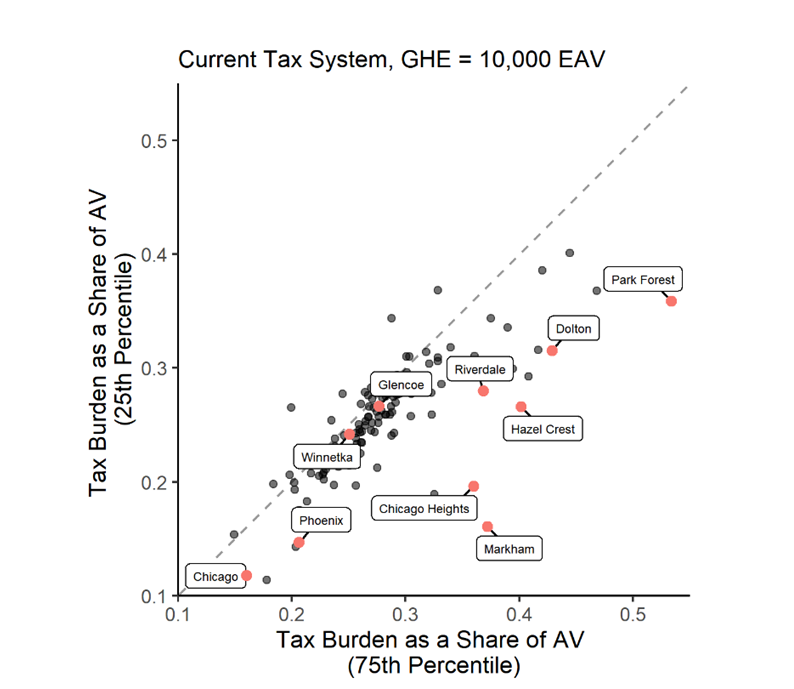

Code
library(tidyverse)
library(ptaxsim)
library(DBI)
library(httr)
library(jsonlite)
library(glue)
library(DT)
knitr::opts_chunk$set(warning = FALSE, message = FALSE, error=TRUE)library(tidyverse)
library(ptaxsim)
library(DBI)
library(httr)
library(jsonlite)
library(glue)
library(DT)
knitr::opts_chunk$set(warning = FALSE, message = FALSE, error=TRUE)file_path <- "C:/Users/aleaw/"
taxyear <-c(2021)
taxyear = as.data.frame(taxyear)
source("../scripts/helper_tc_muninames.R")#ptaxsim_db_conn <- DBI::dbConnect(RSQLite::SQLite(), "./ptaxsim.db/ptaxsim-2023.0.0.db")
if (file.exists(file_path)){
ptaxsim_db_conn <- DBI::dbConnect(RSQLite::SQLite(), "C:/Users/aleaw/OneDrive/Documents/PhD Fall 2021 - Spring 2022/Merriman RA/ptax/ptaxsim.db/ptaxsim-2023.0.0.db")
} else {
ptaxsim_db_conn <- DBI::dbConnect(RSQLite::SQLite(), "./ptaxsim.db/ptaxsim-2023.0.0.db")
}
current_dir = getwd()
if (grepl("website", current_dir)) {
dots = "../"
} else {
dots = "./"
}path <- paste0(dots, "Output/ptaxsim_muni_level_2006to2023.csv")
muni_sums <- read_csv(path) %>%
left_join(nicknames)Error: './Output/ptaxsim_muni_level_2006to2023.csv' does not exist in current working directory ('C:/Users/aleaw/OneDrive/Documents/PhD Fall 2021 - Spring 2022/Merriman RA/ptax/Website').path <- paste0(dots, "Output/ptaxsim_muni_class_summaries_2006to2023.csv")
muni_cl_sums <- read_csv(path) %>%
left_join(nicknames)Error: './Output/ptaxsim_muni_class_summaries_2006to2023.csv' does not exist in current working directory ('C:/Users/aleaw/OneDrive/Documents/PhD Fall 2021 - Spring 2022/Merriman RA/ptax/Website').class_dict <- read_csv("../Necessary_Files/class_dict_singlefamcodes.csv") %>%
mutate(class_code = as.character(class_code)) # change variable type to character so the join works.
ccao_loa <- read_csv("../inputs/ccao_loa.csv") %>%
mutate(class_code = as.character(class_code))Assessed Value is used to identify the quartile breaks within each municipality for single-family properties. These break points will then be used to look at how the tax bill changes for properties with AVs at the 25th percentile, 50th percentile, and 75th percentile.
The assessed value and original equalized assessed values come from the pin data table within PTAXSIM. This table also has every type of exemption that the property received and the amount of EAV that was exempt due to the exemption.
chosen3 <- muni_quartiles %>%
left_join(nicknames) %>%
filter(clean_name %in% c("Dolton", "Chicago", "Glencoe"))
# chosen3
chosen3_ranked <- joined_pins %>%
inner_join(chosen3, by = "agency_name") %>%
mutate(rank = case_when(
av > (quant10-500) & (av<quant10+500) ~ "q10",
av > (quant25-500) & (av<quant25+500) ~ "q25",
av > (quant50-500) & (av<quant50+500) ~ "q50",
av > (quant75-500) & (av<quant75+500) ~ "q75",
av > (quant90-500) & (av<quant90+500) ~ "q90",
av > (quant99-500) & (av<quant99+500) ~ "q99")) %>%
select(clean_name, rank, av, pin, class, everything())
chosen3_billchange <- chosen3_ranked %>%
group_by(clean_name, rank)%>%
arrange(av) %>%
# group_by(agency_name, has_HO_exemp) %>%
mutate(#taxable_eav = final_tax_to_dist / tax_code_rate,
# current bill = current tax rate * portion of levy billed
bill_current = (final_tax_to_dist + final_tax_to_tif),
bill_noexemps = new_comp_TC_rate/100*(equalized_AV-all_exemptions+exe_homeowner),
bill_change = bill_noexemps - bill_current) %>%
group_by(clean_name, rank, has_HO_exemp) %>%
summarize(median_AV = round(median(av)),
median_EAV = round(median(eav)),
# median_bill_cur = median(bill_current),
# median_bill_new = median(bill_noexemps),
# median_change = median(bill_change),
mean_bill_cur = round(mean(bill_current, na.rm=TRUE)),
mean_bill_new = round(mean(bill_noexemps, na.rm=TRUE)),
mean_change = round(mean(bill_change, na.rm=TRUE)),
perceived_savings = median(tax_amt_exe),
cur_comp_TC_rate = round(mean(cur_comp_TC_rate), digits = 2),
new_comp_TC_rate = round(mean(new_comp_TC_rate), digits = 2),
pincount=n()
) %>%
arrange(has_HO_exemp, rank)
#chosen3_billchange
joined_pins %>%
left_join(nicknames) %>%
filter(Option2 == "Single-Family") %>%
filter(av < 500000) %>% # remove the couple really extreme outliers in Chicago
filter(clean_name %in% c("Dolton", "Chicago", "Glencoe", "Oak Park")) %>%
ggplot( aes(y=av, group = clean_name, fill = clean_name)) +
geom_boxplot()+
# facet_wrap(~agency_name, nrow=4) +
coord_flip() +
theme_bw() +
theme(axis.text.x = element_blank(),
axis.ticks.x = element_blank()) +
labs(title = "Distribution of Residential Properties AV", y = "Assessed Value ($)") +
scale_y_continuous(label = scales::dollar)#install.packages("ggridges")
library(ggridges)
joined_pins %>%
left_join(nicknames) %>%
filter(Option2 == "Single-Family") %>%
filter(av < 300000) %>% # remove the couple really extreme outliers in Chicago
filter(clean_name %in% c("Dolton", "Chicago", "Glencoe", "Riverside", "Oak Park")) %>%
ggplot( aes(x = av, y= clean_name, fill = clean_name ) )+
geom_density_ridges( aes(x = av, y=clean_name, fill = clean_name) )+
viridis::scale_fill_viridis(discrete = T, name = "")+
#facet_wrap(~agency_name, ncol=4) +
# coord_flip() +
theme_ridges() +
theme(#axis.text.x = element_blank(),
# axis.ticks.x = element_blank(,
legend.position = "none") +
labs(title = "Distribution of Residential Properties' AV",
x = "Assessed Value", y= "" ) +
scale_x_continuous(label = scales::dollar)Error: object 'joined_pins' not foundchosen3_billchange %>%
pivot_wider(id_cols = c(clean_name, has_HO_exemp),
names_from = "rank", values_from = "mean_change") %>%
mutate(Claimed_Exemption= ifelse(has_HO_exemp == 0 , "Didn't Claim Exemption", "Did Claim Exemption"))Error: object 'chosen3_billchange' not found# chosen3_billchange %>%
# pivot_wider(id_cols = c(clean_name, has_HO_exemp, rank),
# names_from = "rank", values_from = "mean_change") %>%
# mutate(Claimed_Exemption= ifelse(has_HO_exemp == 0 , "Didn't Claim Exemption", "Did Claim Exemption")) %>%
# select(Municipality=clean_name, "Claimed_Exemption", "q25", "q50", "q75")chosen3_billchange %>%
filter(has_HO_exemp == 0 & !is.na(rank)) %>%
select(Municipality = clean_name, "AV Percentile" = rank, "AV" = median_AV, "Average Current Bill" = mean_bill_cur, "Average New Bill" = mean_bill_new, "Tax Bill Change" = mean_change, "Perceived Savings" = perceived_savings, "# Pins in AV Range" = pincount, cur_comp_TC_rate, new_comp_TC_rate, everything())Error: object 'chosen3_billchange' not foundchosen3_summarytable <- chosen3_billchange %>%
filter(has_HO_exemp == 1 & !is.na(rank)) %>%
arrange(clean_name, rank) %>%
select(Municipality = clean_name, "AV Percentile" = rank, "AV" = median_AV, "Average Current Bill" = mean_bill_cur, "Average New Bill" = mean_bill_new, "Tax Bill Change" = mean_change, "Perceived Savings" = perceived_savings, "# Pins in AV Range" = pincount, cur_comp_TC_rate, new_comp_TC_rate, everything())Error: object 'chosen3_billchange' not foundchosen3_summarytableError: object 'chosen3_summarytable' not foundq = c(.10, .25, .5, .75, .9, .99)
muni_ranked <- joined_pins %>% ## cook county single family properties rannked by AV
filter(Option2 == "Single-Family") %>%
filter(tax_code %in% muni_TC_fullyCook$tax_code_num) %>% # excludes county line crossing munis
arrange(av) %>%
summarize(
count_pins = n(),
min = min(av),
quant10 = round(quantile(av, probs = q[1])),
quant25 = round(quantile(av, probs = q[2])),
quant50 = round(quantile(av, probs = q[3])),
quant75 = round(quantile(av, probs = q[4])),
quant90 = round(quantile(av, probs = q[5])),
quant99 = round(quantile(av, probs = q[6])),
max = max(av)
)Error: object 'joined_pins' not foundmunis_ranked <- munis_ranked %>%
filter(major_class_code == 2) %>%
filter(tax_code %in% muni_TC_fullyCook$tax_code_num) %>%
inner_join(muni_quartiles, by = "agency_name") %>%
mutate(rank = case_when(
av > (quant10-500) & (av<quant10+500) ~ "q10",
av > (quant25-500) & (av<quant25+500) ~ "q25",
av > (quant50-500) & (av<quant50+500) ~ "q50",
av > (quant75-500) & (av<quant75+500) ~ "q75",
av > (quant90-500) & (av<quant90+500) ~ "q90",
av > (quant99-500) & (av<quant99+500) ~ "q99")) %>%
select(clean_name, rank, av, pin, class, everything())Error: object 'munis_ranked' not foundPark Forest vs. Winnetka

 For the different exemption scenarios, we created new exemption variables for alternate exemption amounts that can be subtracted from a properties equalized AV.
exe_neg10 all exemption amounts are equal to zero.exe_0, This variable should be the same as the current tax system since we did not add or remove any exempt EAV to the PIN. If the EAV for a PIN is less than 10000 EAV and they did claim the general homestead exemption, then their exempt EAV is equal to their EAV.exe_plus10 is used.joined_pins <- read_csv("../Output/Dont_Upload/0_joined_PIN_data_2023.csv") %>%
mutate(class = as.character(class))
# eq_factor <- 3.0027 # 2021
# eq_factor <- 2.9237 # 2022
eq_factor <- 3.0163 # 2023
joined_pins <- joined_pins %>%
left_join(class_dict, by = c("class" = "class_code")) %>%
## Create variables for alternate exemption amounts that can be subtracted from a properties equalized AV
mutate(#eav = av_clerk*eq_factor,
exe_neg10 = 0,
# exe_0 implies no additoinal or removed EAV. Current tax system.
exe_0 = ifelse(eav < 10000 & exe_homeowner!=0, eav,
ifelse(eav>10000 & exe_homeowner!=0, 10000, 0 )), # no change in current exemptions
exe_plus10 = ifelse(eav < 20000 & exe_homeowner!=0, eav,
ifelse(eav>20000 & exe_homeowner!=0, 20000, 0 )),
exe_plus20 = ifelse(eav < 30000 & exe_homeowner!=0, eav,
ifelse(eav>30000 & exe_homeowner!=0, 30000, 0 ) ),
exe_plus30 = ifelse(eav < 40000 & exe_homeowner!=0, eav,
ifelse(eav>40000 & exe_homeowner!=0, 40000, 0) ),
exe_plus40 = ifelse(eav < 50000 & exe_homeowner!=0, eav,
ifelse(eav>50000 & exe_homeowner!=0, 50000, 0) ),
mil_home = ifelse(major_class_code == 2 & av*10 > 1000000, 1, 0))
# all pins in munis fully within cook county that are some form of single-family, detached home
singfam_pins <- joined_pins %>%
# filter(tax_code %in% muni_TC_fullyCook$tax_code_num) %>% # excludes county line crossing munis
filter(Option2 == "Single-Family")joined_pins %>%
# filter(av < 1000000) %>% # just to see the histogram better
# filter(av < 500000) %>% # just to see the histogram better
filter(av < 300000) %>% # just to see the histogram better
ggplot( aes(x=av)) +
geom_histogram(bins = 50) +
theme_classic()+
# coord_flip()+
labs(title = "Cook County Class 2 Residential PIN Distribution of AV",
x = "Assessed Value ($)", y="# of Pins",
caption = "Dropped PINs with AVs over $300,000 for better visual of histogram bins.") +
scale_x_continuous(label = scales::dollar)+
scale_y_continuous(label = scales::comma)
singfam_pins %>%
# filter(av < 1000000) %>% # just to see the histogram better
# filter(av < 500000) %>% # just to see the histogram better
filter(av < 300000) %>% # just to see the histogram better
ggplot( aes(x=av)) +
geom_histogram(bins = 50) +
theme_classic()+
# coord_flip()+
labs(title = "Cook County Single-Family PIN Distribution of AV",
x = "Assessed Value ($)", y="# of Pins",
caption = "Dropped PINs with AVs over $300,000 for better visual of histogram bins."
) +
scale_x_continuous(label = scales::dollar)+
scale_y_continuous(label = scales::comma)

q = c(.10, .25, .5, .75, .9, .99)
muni_ranked <- joined_pins %>% ## cook county single family properties rannked by AV
filter(Option2 == "Single-Family") %>%
# filter(tax_code %in% muni_TC_fullyCook$tax_code_num) %>% # excludes county line crossing munis
arrange(av) %>%
summarize(
count_pins = n(),
min = min(av),
quant10 = round(quantile(av, probs = q[1])),
quant25 = round(quantile(av, probs = q[2])),
quant50 = round(quantile(av, probs = q[3])),
quant75 = round(quantile(av, probs = q[4])),
quant90 = round(quantile(av, probs = q[5])),
quant99 = round(quantile(av, probs = q[6])),
max = max(av)
)
munis_ranked <- munis_ranked %>%
filter(class_1dig == 2) %>%
# filter(tax_code %in% muni_TC_fullyCook$tax_code_num) %>%
inner_join(muni_quartiles, by = "clean_name") %>%
mutate(rank = case_when(
av > (quant10-500) & (av<quant10+500) ~ "q10",
av > (quant25-500) & (av<quant25+500) ~ "q25",
av > (quant50-500) & (av<quant50+500) ~ "q50",
av > (quant75-500) & (av<quant75+500) ~ "q75",
av > (quant90-500) & (av<quant90+500) ~ "q90",
av > (quant99-500) & (av<quant99+500) ~ "q99")) %>%
select(clean_name, rank, av, pin, class, everything())Error: object 'munis_ranked' not found# Calculates tax rates for all exemption scenarios.
scenario_calcs <- joined_pins %>%
left_join(nicknames) %>%
group_by(clean_name) %>%
summarize(MuniLevy = sum(final_tax_to_dist, na.rm = TRUE), # amount billed by munis with current exemptions in place
current_nonTIF_EAV_post_exemps = sum(final_tax_to_dist/(tax_code_rate/100), na.rm = TRUE),
current_TIF_increment_EAV = sum(final_tax_to_tif/(tax_code_rate/100), na.rm=TRUE),
current_Exempt_EAV = sum(tax_amt_exe/(tax_code_rate/100), na.rm=TRUE),
current_GHE = sum(exe_homeowner, na.rm=TRUE),
Total_EAV = sum((tax_amt_exe+final_tax_to_dist+final_tax_to_tif)/(tax_code_rate/100), na.rm = TRUE),
exe_neg10 = sum(exe_neg10),
exe_0 = sum(exe_0), # no change, for comparison
exe_plus10 = sum(exe_plus10),
exe_plus20 = sum(exe_plus20),
exe_plus30 = sum(exe_plus30),
exe_plus40 = sum(exe_plus40),
mil_home = sum(mil_home)) %>%
# remove all GHE (up to 10,000 EAV added back to base per PIN),
# add exe_homeowner back to taxable base
mutate(neg10_taxable_eav = Total_EAV - current_TIF_increment_EAV - current_Exempt_EAV + current_GHE, # adds GHE exempt EAV back to taxable base and decreases tax rates
plus10_taxable_eav = Total_EAV - current_TIF_increment_EAV - current_Exempt_EAV + current_GHE - exe_plus10, # will increase tax rates
plus20_taxable_eav = Total_EAV - current_TIF_increment_EAV - current_Exempt_EAV + current_GHE - exe_plus20,
plus30_taxable_eav = Total_EAV - current_TIF_increment_EAV - current_Exempt_EAV + current_GHE - exe_plus30,
plus40_taxable_eav = Total_EAV - current_TIF_increment_EAV - current_Exempt_EAV + current_GHE - exe_plus40,
scenario_noexemptions_taxable_eav = Total_EAV - current_TIF_increment_EAV) %>%
mutate(tr_neg10 = MuniLevy / neg10_taxable_eav,
tr_nochange = MuniLevy / current_nonTIF_EAV_post_exemps,
tr_plus10 = MuniLevy / plus10_taxable_eav,
tr_plus20 = MuniLevy / plus20_taxable_eav,
tr_plus30 = MuniLevy / plus30_taxable_eav,
tr_plus40 = MuniLevy / plus40_taxable_eav,
tax_rate_current = MuniLevy/current_nonTIF_EAV_post_exemps,
taxrate_noexemps = MuniLevy /(Total_EAV - current_TIF_increment_EAV ),
taxrate_noTIFs = MuniLevy / (Total_EAV - current_Exempt_EAV),
taxrate_noTIFs_orExemps = MuniLevy / Total_EAV) %>%
select(clean_name, MuniLevy, tr_neg10:taxrate_noTIFs_orExemps, everything())
scenario_taxrates <- scenario_calcs %>% select(clean_name, MuniLevy, tr_neg10:taxrate_noTIFs_orExemps)
scenario_taxrates2 X 3 image of distribution for each $10,000 increase in exemption amount ### Table 3. Revenue Neutral Tax Rates
Revenue Neutral Tax Rates (Percent) for Select Municipalities as a Function of GHE Value
Relationship of GHE Value and Revenue Neutral Tax Rates in Chicago, Dolton, and Glencoe
Doesn’t exist, whoops!